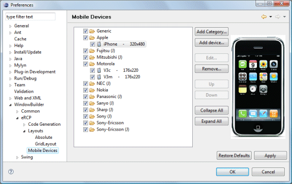
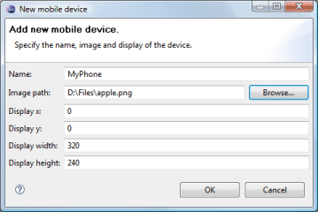
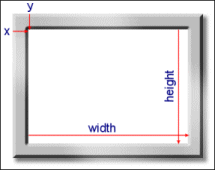

|  The Mobile
Devices preference page allows the drop down
Device Menu to
be configured. Categories and devices may be added,
edited, rearranged and removed. Items may be rearranged using the Up and
Down buttons or via drag and drop. The Collapse All
and Expand All buttons show or hide all of the elements in
the list. Items may be hidden from the
Device Menu by unchecking the checkbox next
to their category or device name.
Commands
Command
|
Description
|
|
Add Category... |
Create a new named category to contain device entries. The category is inserted at the end of the list. |
|
Add Device... |
Create a new entry representing a mobile device. The entry must have a
name, an image path, a display offset (x, y) from the upper-left corner,
and a display width and height.

 |
|
Edit... |
Edit the selected category or device. |
|
Remove... |
Remove the selected category or device. |
|
Up |
Move the selected component upward in the list. Components may also be
moved via drag/drop. |
|
Down |
Move the selected component downward in the list. Components may
also be moved via drag/drop. |
|
Collapse All |
Collapse all of the components in the tree. |
|
Expand All |
Expand all of the components in the tree. |
|